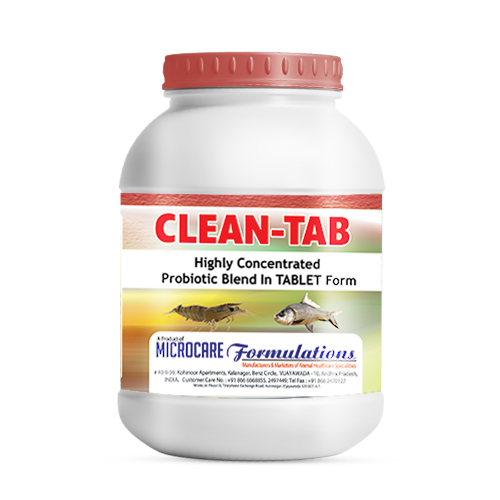
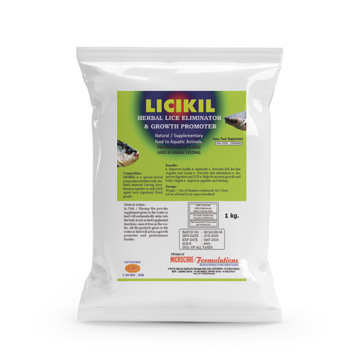
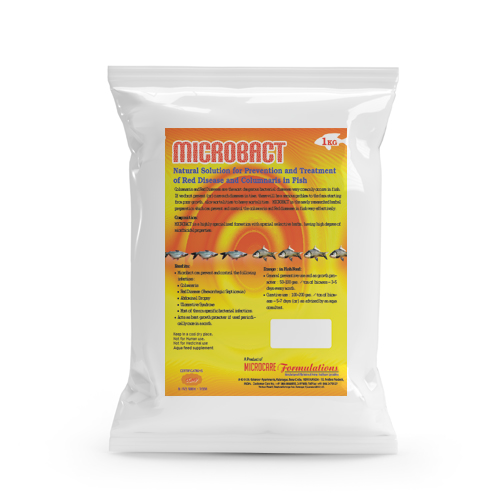
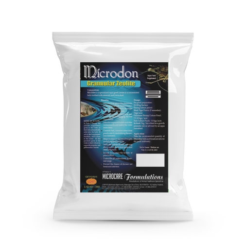
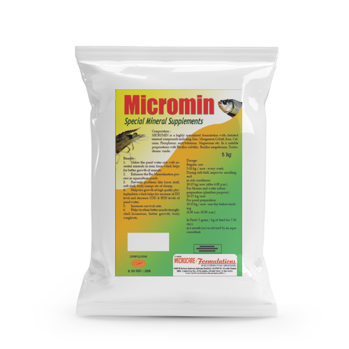
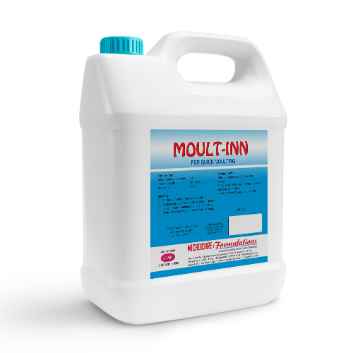
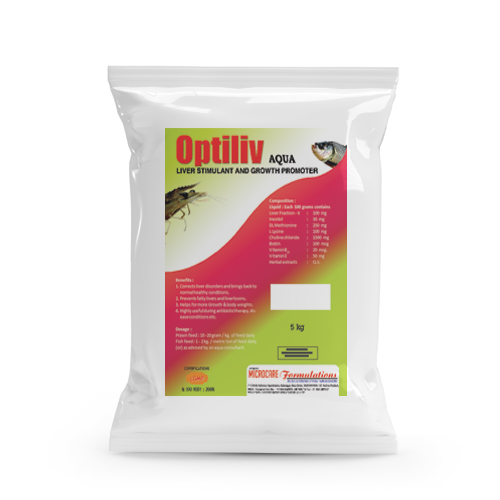
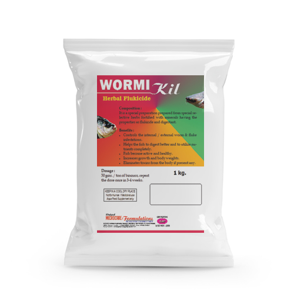

CLEAN PRO
Bacillus subtillis, B-Lincheniformis,
B-Polymyxa, B-Megaterium, B-Pumilus Aspergillus
oryza, Nitrosomonas, Nitrobacter, Cellulomonas,
Pseudomonas denitrificans, Rhodococcus,
Rhodobacte etc.
Benefits* Provides better environment to the animals in the
pond.
* Improves good plankton levels.
* Maintains optimum DO, temperature etc.

CLEAN PS
Rhodococcus sps, Rhodobacter sps, Bacillus
Subtillis,Bacillus Polymyxa, Bacillus Megaterium,
Cellulomonas Cartae, Bifido bacterium etc.
Benefits* Improves water quality and provides better
environment to the aquatic animals.
* Removes bottom settled sediments and provides
more free space to the animals.

CLEAN-TAB
Bacillus subtillis, Bacillus licheniformis, Bacillus
megaterium, Trichoderma viride, Nitrosomonas
europaea, Nitrobacter winogradskyi, Aspergillus
oryzae, Rhodococcus, Rhodospirillum rubrum,
Cyanobacteria, Pseudomonas denitrificans,
Pseudomonas oxalaticus.
Benefits* Effective to eliminate the toxic gases quickly.
* Reduces the pathogenic bacterial loads fastly.
* Helps for better growth and more survival.
* Reduces stress to the animals ·

COPPER FIX
potent & safe algicide.
Benefits* Controls dense filamentous Algae.
* Prevents and controls the infections due to
fungus, protozoans, bacteria and Algae etc.
* Restricts the over growth of algae production.

GAS BIND-Y
Aloevera, Yucc a Schidigera, beneficial bacteria,
enzymes etc.
Benefits* Binds Ammonia and other poisonous gases like
h y d r o g e n s u l p h i d e , c a r b o n m o n o x i d e
sulphurdioxide etc. completely and effectively.
* Improves water quality.
* Reduces Biological and chemical oxygen demand
* Animals feel extra comfort and relaxation.

GEL PLUS
Amino acids, carbohydrates and micro nutrients in gel
form.
Benefits* Acts as good binding agent and transports powder
form recommendations to prawn gut.
* Avoids wastage of feed since it acts as best
attractive agent.
* Helps for better growth and body weights.
* Stable at wide range PH and salinities.
* Easily digestable with high value nutrients.

HERB ACT
Extracts of Osimum sanctum,
neemleaves, carilla, alovera, bitter melon, bitter apple
and several other herbs having antimicrobial action.
Benefits* Minimises the growth of pathogenic microbes both
in the gut and in the system of aquatic animals.
* Prevents the chances of occurance of microbial
diseases.

HI FAT
Mixture of Codliver Oil, Squid liver oil fortified with
essential fatty acids and vitamins.
Benefits* Animals takes feed quickly and completely.
* Adds more value to the feed and improves feed
conversion efficiency.
* Reduces size variations in shrimp / prawn.
* Animal become more strong with additional health,
immunity and stamina.

LEMON C
COATED ASCORBIC ACID 50%.
Benefits* Improves disease resistance
* Makes the animals fit for stress tolerance
* Promotes faster wound healing.
* Improves health, growth with better survivals.
* Prevents loose shell and big head diseases.

LICIKIL
It is a special herbal preparation fortified with minerals
having functional properties as anti LICE agent and
digestant.
Benefits* Eliminates fish lice like Argulas and Lernia.
* Controls skin infestations.
* Improves digestion and FCR.
* Helps to increase growth and body weights.

LUMI FIX
It is a bio chemical preparation having special action
on Luminscent Bacteria, vibrio and other bacterial:
infections of prawn.
Benefits* Controles Luminiscent bacteria.
* Controles Vibrio load.
* Controles toxic gases.
* Prevents bottom decomposition.

MC RON
concentrated water &
soil probiotic granules.
Benefits* Reduces the suspended organic sludge.
* It decelerates the growth of pathogenic
microorganisms.
* Elimination of toxic gases.
* Improve the stable water quality.

MICRO FRESH
Highly concentrated aqua grade zeolite with natural
gas adsorbants and oxygen releasers.
Benefits* Makes the aqua pond fresh & clean by adsorbing
toxic gases like NH3, H2S, SO2, CO, methane etc.
* Reduces water turbidity and improves clarity.
* Maintains optimum quantity of dissolved oxygen in
the pond.
* cleans up the pond bottom.

MICRO PLANKT
Chelated zinc, manganese, calcium, phosphorus,
Boron, Potassium, cobalt, molybdenum, magnesium,
copper, iron and micro organism having property of
nutrient conversion.
Benefits* Stimulates and enhances the growth of plankton
by fast and better absorption and assimilation of
micro nutrients by plankton.
* Regulates temperature & DO levels in the ponds.

MICROBACT
Columnaris & Red Diseases are the most dangerous
bacterial diseases very commonly occurs in fish.
BenefitsMicrobact can prevent and control the
following infections:
* Columnaris.
* Red Disease (Haemorrhagic Septicemia).
* Abdominal Dropsy.
* Ulcerative Syndrome.
* Most of the non specific bacterial infections.

MICROCARE BKC-80%
Alkyl dimethyl benzyl-konium chloride 80%.
Benefits* Prevents water pollution and purifies pond water.
* Effectively controls the growth of pathogenic
microbes like viruses, bacteria, protozoans, fungal
organism in the ponds.
* Stimulates moulting process & helps for periodical
moulting.
* Eliminates ectoparasites and controls tail and gill
infections.

MICROCARE BROMIN 5%
Bromin 5%.
Benefits* Highly potent and broad spectrum in nature and
effectively covers virus, bacteria, fungi, protozoa and
filamentous algae in aquatic ponds.
* Sanitizes the body parts of aquatic animals and helps
to heal external infections.
* Avoids formation of algal bed in the pond bottom
which prevents the free movement of prawn / shrimp.
* Prevents and controls infections of gills, tail, antanne
etc.

MICROCARE GLUTEROL
for control of lb & vibrio.
Benefits* Controls microbial loads like virus, bacteria,
* fungus and protozoan organisms in aquaculture
ponds.
* Helps to control all kinds of gill infections, tail rot,
cut of antennae etc. of shrimp.
* Controls external wounds, red blotches on
stomach, infections of gills, tail etc. of fish.

MICROCARE IODINE
Available Iodine 20%.
Benefits* Inhibits the growth of microbial pathogens.
* Destroys virus like reo virus, baculovirus, white spot
causing virus etc.
* Eradicates the growth of fungal organism like
Fusarium legenedium sps etc.
* Effectively controls pathogenic bacteria like vibrio,
psuedomonas, aeromonas etc.

MICRODON
specialized aqua grade
zeolite in a concentrated balls fortified with minerals
and yucca dust.
Benefits* Adsorbs toxic gases like Ammonia, Hydrogen
sulphide, Carbon monoxide etc. from pond water
by its unique molecular pore structures.
* Neutralizes the adsorbed toxic Ammonia by Ion
Exchanging the free Ammonium.
* Adsorbs suspended solids & other contaminants
and makes the water more clean.

MICROMIN
highly specialized
formulation with chelated mineral compounds
including Zinc, Manganese, Cobalt, Iron, Calcium,
Phosphorus, molybdenium, Magnesium etc.
Benefits* Makes the pond water rich with essential minerals
in ionic form which helps for better growth of
animals.
* Enhances the Bio Mineralization process in
aquaculture ponds.
* Prevents problems like loose shell, soft shell, body
cramps etc of shrimp.

MOULT-INN
moulting stimulator.
Benefits* Fast action and quick moulting
* Induces moulting without any stress.
* Will not interfere in other pond parameters like DO,
* pH, etc.
* Does not cause any algal crash.
* Works equally in all salinities and fresh water.

OPTILIV-AQUA
herbal flukicide.
Benefits* Corrects liver disorders and brings back to normal
healthy conditions
* Prevents fatty livers and liver toxins
* Helps for more Growth & body weights
* Highly useful during antibiotic therapy, disease
conditions etc.

TRI Care
M i c r o n u t r i e n t s , M a n n o n
oligosaccharides, carotenoids, betaine, essential fatty
acids, essential amino acids and multivitamins.
Benefits* Prevents and controls loose shell disease and
causative losses
* Maintains perfect defence mechanism of aquatic
animals and resists all kinds of diseases
* I m p r o v e s g r o w t h a n d b o d y w e i g h t s b y
supplementing essential nutrients i.e. amino
acids, vitamins, minerals etc.

WORMIKIL
It is a special preparation prepared from special
selective herbs fortified with minerals having the
properties as flukicide and digestant.
Benefits* Controls the internal / external worm and fluke
infestations.
* Helps the fish to digest better & to utilize nutrients
completely.
* Fish become active and healthy.
* Increases growth and body weights.